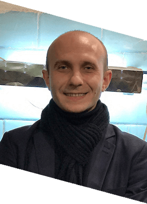
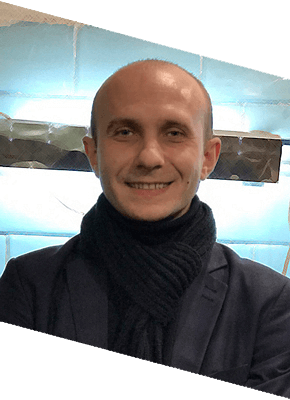

Курсы шитья обуви. Дизайн, моделирование и пошив
Наша методика обучения предполагает совмещения теории и практики изготовления обуви. Уже с первых занятий Вы сможете применить теоретические знания на практике, закрепив тем самым свои навыки
Наша методика обучения предполагает совмещения теории и практики изготовления обуви. Уже с первых занятий Вы сможете применить теоретические знания на практике, закрепив тем самым свои навыки
Школа обувного мастерства Bivardi проводит постоянный прием на индивидуальные курсы шитья обуви своими руками
На курсы по пошиву обуви приглашаются все желающие. Курс проводят специалисты по изготовлению модельной обуви в городе Киев с 2010 года. Обучение проходит в специальном цехе по изготовлению обуви на профессиональном оборудовании. По окончанию курсов ученикам бесплатно предоставляется качественные материалы и оборудование, на котором они изготавливают для себя две пары дизайнерской обуви.
Методика обучения на курсах совмещает теорию и практические уроки по изготовлению обуви по принципу: "рассказали как - показали на примере - повторили за нами". Такой стиль учебы позволяет на практике получить полученные знания.

Обучение индивидуальное с практическими занятиями. Курс рассчитан на полтора месяца регулярных занятий, продолжительность одного занятия - 4 часа в рабочие дни. Всего, 18 занятий по 4 часа. Интервал - 3 раза в неделю удобное для ученика время, например: с 09.00 - до 13.00 или с 13.00 - до 17.00 или с 17.00 - до 21.00.
Преподают курсы обувного мастерства настоящие профессионалы своего дела с большим практическим опытом и успешными наработками в данной сфере. Дизайн обуви, моделирование, все этапа изготовления - пройдут с ними легко и весело.
Ну и конечно же, весь свой опыт они передают своим ученикам.
 

Полностью оборудованное рабочее место со всеми необходимыми расходными материалами и инструментами: брусовочные машины, шлиферы, пресс для приклейки подошвы, раскройные столы, затяжные клещи и молотки, обувные колодки всех типов.

Задайте индивидуальный вопрос и получите ответ на электронную почту. Полезные вопросы-ответы будут опубликованы на нашем сайте.
{kind=link}
{kind=link}
{kind=link}
{kind=link}
{kind=link}